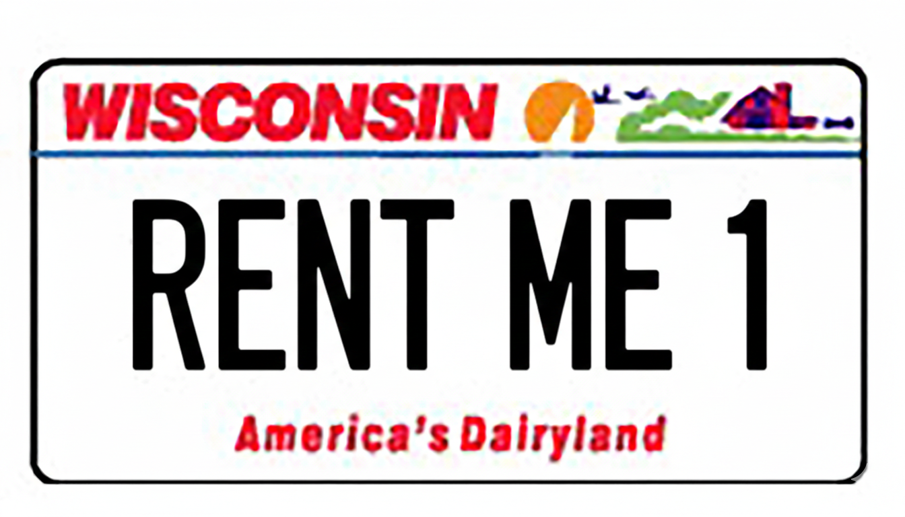

Independent · Family-Owned · Black River Falls, WI
Skip the national chains, the call center, and the airport markup. Riverside Auto Rental has been Black River Falls' independent, family-owned car and van rental since 1983 — with the same phone number, the same family, and a fleet that still includes 15-passenger vans the chains gave up on.

Plain-English definition, because the phrase gets used loosely online.
A local car rental in Black River Falls means an independently owned rental business with one local location, a local phone number, and a local owner you can actually reach. Riverside Auto Rental is that business — established in 1983, run by the same family, and operating from N5856 Wi-54, just off I-94. We are not a franchise of a national brand, we are not a license under a corporate name, and we are not a third-party booking site. When you call 715-396-1466, you reach Black River Falls.
National rental chains operate a different model. Their pricing is built around airport concession fees, dynamic demand pricing that adjusts hour by hour, franchise overhead, and call centers that route you to whoever picks up. That model works for a traveler renting at MSP or O'Hare. It does not always serve drivers in Jackson County, Monroe County, Clark County, or Trempealeau County — which is exactly why we have stayed independent for more than four decades.
A side-by-side look at the practical differences when you book with us versus a national chain.
| Feature | Riverside Auto Rental (Local, Independent) | Typical National Chain |
|---|---|---|
| Ownership | Family-owned in Black River Falls since 1983 | Publicly traded or franchise-licensed |
| Who answers the phone | Our team, on Highway 54 — 715-396-1466 | Routed call center, often out of state |
| Pricing model | Flat published rates, no surge pricing | Dynamic pricing that changes by demand |
| Airport concession fees | None — we are not at an airport | Common at airport pickup locations |
| Closest pickup to Black River Falls | Right here, on WI-54, off I-94 Exit 116 | Eau Claire or La Crosse, ~45–60 min away |
| 15-passenger vans | In fleet, available year-round | Largely phased out for consumer rentals |
| Insurance replacement | Direct billing with most carriers; local body shop relationships | Direct billing available; routed through national queue |
| Long-term & weekly rentals | Pay for 6 days, get the 7th free; weekly cars include unlimited miles | Varies by location and dynamic rate |
| Where the money goes | Stays in the Black River Falls economy | Largely flows out to corporate headquarters |
| Years serving Jackson County | 40+ (since 1983) | Varies — most do not have a Jackson County branch |
Comparison reflects general industry practice for national rental chains and the operating model at Riverside Auto Rental as of 2026. Specific terms at any individual chain location may vary.
The practical case for renting from a Black River Falls business, not a national chain.
Call 715-396-1466 and you reach Black River Falls — not a national queue, not an offshore agent, not a chatbot. If something comes up mid-rental, the same people who handed you the keys answer the phone.
Our daily and weekly rates are posted, predictable, and the same on a Tuesday afternoon as on a Friday at 5 p.m. No surge pricing, no airport concession fee, no opaque "facility charges."
Most national chains have removed 15-passenger vans from their consumer fleets. We still rent them — for family reunions, church groups, sports teams, weddings, and group tourism. Learn more about van rentals →
We work directly with adjusters and area body shops. That means same-day pickup is realistic and your claim does not get routed through a national queue. How insurance rentals work here →
Rental dollars at a local independent stay in the local economy — payroll, taxes, sponsorships, vehicle service done at area shops. With a national chain, most of that revenue heads to corporate headquarters far outside Wisconsin.
Riverside Auto Rental has rented vehicles in Black River Falls since 1983. That predates most of the chain locations in Wisconsin. We have rented to a generation of families, employers, and visitors in this region.
Across the rental industry, large 15-passenger vans have been pulled from most consumer fleets at national chains. Riverside Auto Rental still keeps them in service — and we are one of the only providers in western Wisconsin that does. If you are organizing a group, this is the single biggest reason to rent local.
No national chain branch in your town? You are not alone — these communities pick up here regularly.
~25 min · I-94 East, Exit 116
Monroe County's closest independent rental — without driving to a chain branch in La Crosse.
~25 min · WI-27 N to I-90/I-94 E
No local rental option in Sparta. We are the nearest independent with 15-passenger vans.
~20 min · WI-54 West (direct)
Clark County's closest rental. A direct WI-54 connection — no detour to Eau Claire.
~20 min · I-94 East, Exit 116
Closest rental to Wisconsin's Cranberry Capital — book vans early for festival weekends.
~20 min · WI-54 North (direct)
Jackson County's nearest rental — with a direct WI-54 connection.
~30 min · I-94 South, Exit 116
Trempealeau County drivers use us for vans, weekly rentals, and insurance replacements.
Riverside Auto Rental has rented cars and vans from Black River Falls since 1983 — that is over four decades of renting to the same families, the same employers, and the same body shops in this region. We share a building with Riverside Auto Sales, a fixture in Black River Falls that has been operating just as long.
What that means for you: when you book with us, the keys are handed to you by the same people you reach on the phone. We are not a brand someone bought. We are not a franchise that changes ownership. We are not a website that subcontracts out the actual rental. We are the local rental — and we plan to stay that way.
Visit Us on Highway 54 Read the BlogYes — Riverside Auto Rental is the independent, family-owned car rental option in Black River Falls. We have served the Black River Falls area and western Wisconsin since 1983 from N5856 Wi-54. We are not affiliated with any national rental chain, franchise, or corporate brand.
When you rent from Riverside Auto Rental, you reach a local owner directly at 715-396-1466 — no call center, no surge pricing, no airport concession fees. National chains build pricing around airport locations, dynamic demand pricing, and franchise overhead. We are a single-location independent in Black River Falls with flat published rates, family ownership since 1983, and direct relationships with body shops and adjusters across western Wisconsin.
No. The nearest national rental chain branches are in larger metros such as Eau Claire and La Crosse, typically 45–60 minutes away and often tied to airport pricing. Within Black River Falls and Jackson County, Riverside Auto Rental is your independent, locally owned option.
Yes. Most national rental chains have phased 15-passenger vans out of their consumer fleets. Riverside Auto Rental still offers 15-passenger vans for family reunions, church groups, sports teams, weddings, and group tourism in western Wisconsin. Reserve early — our vans book fastest.
Yes. Riverside Auto Rental works directly with insurance adjusters and body shops across western Wisconsin to provide replacement vehicles while your car is being repaired. We handle direct billing with most major carriers — same as a national chain, with the added benefit of a local point of contact. Learn more about insurance replacement rentals.
Renting local keeps your money in the Black River Falls economy, supports a family-owned business that has been part of Jackson County since 1983, gives you a direct line to the owner if anything comes up, and avoids the airport surcharges and dynamic pricing built into national chain rentals. You also get vehicle classes (like 15-passenger vans) that the chains have largely eliminated.
One call gets you a flat rate, a real person, and a vehicle ready when you need it. No call center, no airport markup, no surprises.
Call 715-396-1466 See Fleet & Rates